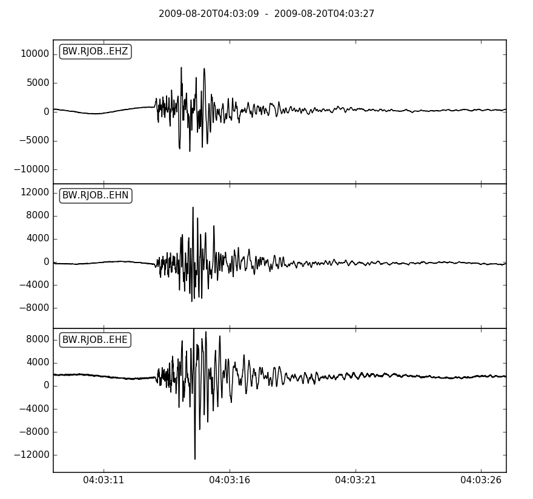

obspy.clients.arclink - ArcLink/WebDC request client for ObsPy¶
ArcLink is a distributed data request protocol usable to access archived waveform data in the MiniSEED or SEED format and associated meta information as Dataless SEED files. It has been originally founded within the German WebDC initiative of GEOFON (Geoforschungsnetz) and BGR (Bundesanstalt für Geowissenschaften und Rohstoffe). ArcLink has been designed as a “straight consequent continuation” of the NetDC concept originally developed by the IRIS DMC. Instead of requiring waveform data via E-mail or FTP requests, ArcLink offers a direct TCP/IP communication approach. A prototypic web-based request tool is available via the WebDC homepage at http://www.webdc.eu.
Recent development efforts within the NERIES (Network of Excellence of Research and Infrastructures for European Seismology) project focuses on extending the ArcLink network to all major seismic data centers within Europe in order to create an European Integrated Data Center (EIDAC). Currently (September 2009) there are four European data centers contributing to this network: ORFEUS, GFZ (GeoForschungsZentrum), INGV (Istituto Nazionale di Geofisica e Vulcanologia), and IPGP (Institut de Physique du Globe de Paris).
| copyright: | The ObsPy Development Team (devs@obspy.org) |
|---|---|
| license: | GNU Lesser General Public License, Version 3 (https://www.gnu.org/copyleft/lesser.html) |
Basic Usage¶
Note
The default client needs to open port 18002 to the host webdc.eu via TCP/IP in order to download the requested data. Please make sure that no firewall is blocking access to this server/port combination.
Note
The user keyword in the following examples is used for identification
with the ArcLink server as well as for usage statistics within the data
center, so please provide a meaningful user id such as an email address.
get_waveforms(): The following example illustrates how to request and plot 18 seconds of all three single band channels ("EH*") of station Jochberg/Hochstaufen ("RJOB") of the Bavarian network ("BW") for an seismic event around 2009-08-20 04:03:12 (UTC).>>> from obspy import UTCDateTime >>> from obspy.clients.arclink.client import Client >>> client = Client(user='test@obspy.org') >>> t = UTCDateTime("2009-08-20 04:03:12") >>> st = client.get_waveforms("BW", "RJOB", "", "EH*", t - 3, t + 15) >>> st.plot()
Waveform data fetched from an ArcLink node is converted into an ObsPy
Streamobject. The seismogram is truncated by the ObsPy client to the actual requested time span, as ArcLink internally cuts SEED files for performance reasons on record base in order to avoid uncompressing the waveform data. The output of the script above is shown in the next picture.(Source code, png, hires.png)
get_paz(): Requests poles, zeros, gain and sensitivity of a single channel at a given time.>>> from obspy import UTCDateTime >>> from obspy.clients.arclink.client import Client >>> client = Client(user='test@obspy.org') >>> dt = UTCDateTime(2009, 1, 1) >>> paz = client.get_paz('BW', 'MANZ', '', 'EHZ', dt) >>> paz AttribDict({'poles': [(-0.037004+0.037016j), (-0.037004-0.037016j), (-251.33+0j), (-131.04-467.29j), (-131.04+467.29j)], 'sensitivity': 2516778600.0, 'zeros': [0j, 0j], 'name': 'LMU:STS-2/N/g=1500', 'gain': 60077000.0})
save_response(): Writes response information into a file.>>> from obspy import UTCDateTime >>> from obspy.clients.arclink.client import Client >>> client = Client(user='test@obspy.org') >>> t = UTCDateTime(2009, 1, 1) >>> client.save_response('BW.MANZ..EHZ.dataless', 'BW', 'MANZ', '', '*', ... t, t + 1, format="SEED")
save_waveforms(): Writes the requested waveform unmodified into your local file system. Here we request a Full SEED volume.>>> from obspy import UTCDateTime >>> from obspy.clients.arclink.client import Client >>> client = Client(user='test@obspy.org') >>> t = UTCDateTime(2009, 1, 1, 12, 0) >>> client.save_waveforms('BW.MANZ..EHZ.seed', 'BW', 'MANZ', '', '*', ... t, t + 20, format='FSEED')
get_inventory(): Request inventory data.>>> from obspy import UTCDateTime >>> from obspy.clients.arclink.client import Client >>> client = Client(user='test@obspy.org') >>> inv = client.get_inventory('BW', 'M*', '*', 'EHZ', restricted=False, ... permanent=True, min_longitude=12, ... max_longitude=12.2) >>> inv.keys() ['BW.MROB', 'BW.MANZ..EHZ', 'BW', 'BW.MANZ', 'BW.MROB..EHZ'] >>> inv['BW'] AttribDict({'description': 'BayernNetz', 'region': 'Germany', ... >>> inv['BW.MROB'] AttribDict({'code': 'MROB', 'description': 'Rosenbuehl, Bavaria', ...
{kind=link}
{kind=link}
Further Resources¶
- ArcLink protocol specifications:
- Short introduction to the ArcLink protocol
- Latest ArcLink server
- SeismoLink: a SOAP Web service on top of the ArcLink network
Classes & Functions¶
client.Client |